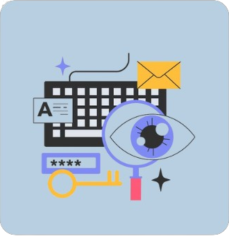
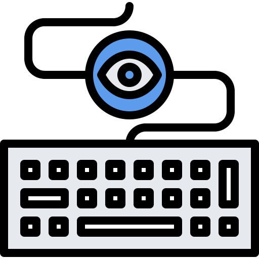

KeySpy - Remote Keylogger & RPE
An advance Python keylogger with web interface for viewing captured keystrokes & executing payloads remotely in real-time.
Features:
- 1. Captures keystrokes in the background while running.
- 2. Stores captured keystrokes in mongoDB Atlas.
- 3. Displays captured keystrokes in a web interface.
- 4. Executes Payloads remotely.
- 5. Allows viewing keystrokes from multiple sessions.
- 6. Auto Start-up on system boot.
- 7. Captures IPv4 address of target.

Keylogger
Capture opened applications where keystrokes are made & store them in mongoDB.
Web Interface
For Monitor the Keylogs & Execute the Payloads, visit w3blogger.vercel.app.